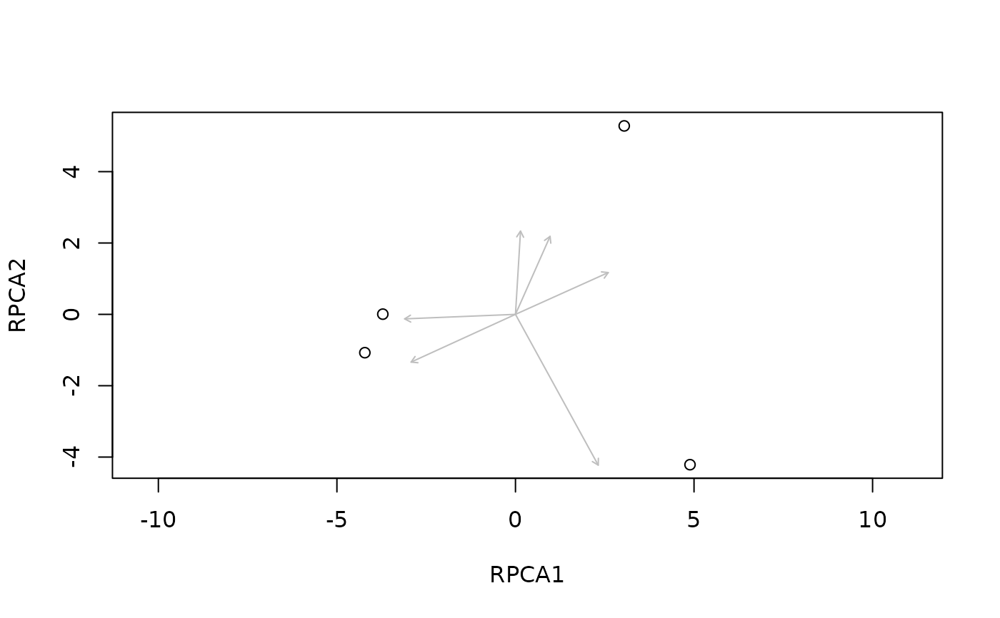

Ordinates samples straight from a count table, treating zeros as missing
values rather than replacing them with pseudocounts. Robust Aitchison PCA
(Martino et al. 2019) is the method of DEICODE and of QIIME 2's gemelli
plugin: a robust centered log-ratio transform of the non-zero counts,
completion of the missing entries with a low-rank matrix (OptSpace), and a
PCA of the completed matrix. It returns sample scores and feature loadings
for a biplot.
Usage
rpca(
counts,
margin = 1L,
n_axes = 3L,
max_iters = 5L,
tol = 1e-05,
min_sample_count = 0,
min_feature_count = 0,
min_feature_frequency = 0,
distances = FALSE,
cpus = n_cpus()
)Arguments
- counts
A numeric matrix of count data (samples \(\times\) features), or any of the other objects listed in "Input Types". Values must be finite and non-negative; they need not be integers (proportions give the same result as counts).
- margin
The margin containing samples.
1if samples are rows,2if samples are columns. Ignored whencountsis a special object class (e.g.phyloseq). Default:1- n_axes
The rank of the low-rank model, which is also the number of axes returned: a whole number from 1 to 10 (gemelli suggests fewer than 10). Default:
3- max_iters
The largest number of OptSpace gradient descent iterations; fewer are run if
tolis reached first. More is not better: see "Iterations". Default:5- tol
Stop early once the root mean squared error of the fit to the (rescaled) observed values falls below
tol. Default:1e-5- min_sample_count
Drop samples whose total count (after the feature filters) is not above this. Default:
0- min_feature_count
Drop features whose total count is not above this. Default:
0- min_feature_frequency
Drop features that are non-zero in no more than this percentage of samples (0 to 100). Default:
0- distances
If
TRUE, also return gemelli's distances between samples, as adistobject in attributedm. See "Distances" below. Default:FALSE- cpus
How many parallel processing threads should be used. The default,
n_cpus(), will use all logical CPU cores.
Value
A numeric matrix with one row per kept sample and one column per
axis, named "RPCA1", "RPCA2", etc., as described in "Ordination
result" below. Samples removed by the filters (see "Method") have no
row. Rows are named after the samples, or numbered by their position in
counts if it has no sample names, so that the kept samples can always
be identified. Its attributes are:
method:"rpca".eig: The variance of each axis: \(s^2 / (n - 1)\) for \(n\) kept samples, as forpca(). See "Relation to gemelli's results".prop: The proportion of the centered completed matrix's total variance that each axis explains,eig / trace. This is gemelli'sproportion_explained.trace: The centered completed matrix's total variance: the sum of alln_axesaxes' variances. (The completed matrix has rankn_axes.)loadings: A matrix with one row per kept feature and one column per axis: the unit-length feature loadings, for a biplot.cost: The root mean squared error of the low-rank fit to the observed values, after OptSpace's initialization and after each iteration (on OptSpace's rescaled data, as gemelli measures it).n_iters: The number of OptSpace iterations run.dm: Only withdistances = TRUE. Adistobject of distances between the kept samples, of classc("ecodive_dist", "dist"), asbeta_div()returns.
Details
Method
Filtering. Features are kept if their total count is above
min_feature_countand they are non-zero in more thanmin_feature_frequencypercent of samples; then samples are kept if their total over those features is abovemin_sample_count; then features that are zero in every remaining sample are dropped. These are gemelli's filters with its defaults: at0, they only drop samples and features that are entirely zero. (gemelli's documentation suggests amin_sample_countof at least 500.) Samples with a single non-zero feature are also dropped, with a warning: see "Differences from gemelli". The result has rows for the kept samples only.Robust clr. For each sample, the log of each non-zero count minus the mean log over its non-zero counts (as
normalize()withnorm = 'rclr'). Zeros are missing values: they are not part of the mean and are not given a value.Matrix completion. OptSpace (Keshavan, Montanari & Oh 2010) fits a rank-
n_axesmatrix \(USV^T\) to the observed values only: it starts from their topn_axessingular vectors and runs up tomax_iterssteps of gradient descent on the Grassmann manifold, re-fitting the \(k \times k\) matrix \(S\) after each step.PCA. The completed matrix \(X = USV^T\) is centered (columns, then rows) and decomposed as \(X = u\,\mathrm{diag}(s)\,v^T\). The sample scores are \(u\,\mathrm{diag}(s)\) and the feature loadings \(v\). So
ord %*% t(attr(ord, 'loadings'))is the centered completed matrix, andpcoa()of the Euclidean distances between its rows would give the same scores.
rpca() takes a count table, not distances, so like pca() it is called
directly rather than through dist_ord().
Relation to gemelli's results
gemelli reports the singular values \(s\) as its "eigenvalues", the
unscaled \(u\) as its sample loadings, and \(s^2 / \sum s^2\) as the
proportion explained. Here eig is a variance, \(s^2 / (n - 1)\), on the
same scale as pca()'s, and the scores are \(u\,\mathrm{diag}(s)\), as
for pca() and pcoa(). So, for an ordination ord of \(n\) samples,
gemelli's eigenvalues are sqrt(attr(ord, 'eig') * (n - 1)) and its
sample loadings are sweep(ord, 2, sqrt(attr(ord, 'eig') * (n - 1)), '/').
prop and the feature loadings are the same as gemelli's.
Speed and memory
gemelli works with dense \(n \times p\) arrays. rpca() never forms
one: every step works from the non-zero counts and the
\(n \times k\) and \(p \times k\) factors, in parallel C. The initial
singular vectors come from block Lanczos iteration using sparse products
(the same solver as pca() and pcoa()); the descent's cost and
gradients are sums over the non-zero counts; the line search's cost along
the search direction is a quartic polynomial whose coefficients take one
pass; and the final PCA reduces to \(k \times k\) problems.
Each descent step takes time proportional to the number of non-zero
counts times \(k^2\), plus \(k^4/4\) per sample for re-fitting
\(S\). The initial SVD takes a number of steps that depends on the gap
between the n_axes-th and next singular values, each a pass over the
non-zero counts plus work on a basis of \(\min(n, p)\)-long vectors.
Memory beyond the input is about 24 bytes per non-zero count, plus about
\(80 (n + p) k\) bytes for the factors, plus about 1.5 kB per sample or
per feature, whichever there are fewer of, for the Lanczos basis.
Threads (cpus) share every pass over the non-zero counts; small tables
use one thread. Results are identical from run to run and for any number
of cpus; R's random number generator is neither used nor changed. Each
axis is flipped so that its largest score in absolute value is positive,
with the loadings flipped to match.
Biplots
The scores are \(u\,\mathrm{diag}(s)\) and the loadings are the unit
vectors \(v\): a distance (form) biplot, in which distances between
samples are preserved and each feature's arrow shows the direction in
which its robust clr increases. (gemelli, and QIIME 2's Emperor, plot
\(u\) and \(v\).) The loadings are much shorter than the scores;
plot(ord) scales them to fit among the samples and draws them as
arrows (see plot.ecodive_ord()):
Iterations
OptSpace minimizes the error on the observed values only, so with many
iterations it can overfit them, and the completed values (and the
eigenvalues) can grow far beyond the data. For example, on a 20
\(\times\) 10 table with half its counts zero, the first singular value
was 15.5 after 5 iterations, 30.2 after 50, and 41.7 after 400; gemelli's
own OptSpace behaves the same. The default of 5 is gemelli's and is
recommended; cost shows how the fit changes.
Distances
With distances = TRUE, rpca() also returns the distances that gemelli
returns with its ordination (which it describes as the Aitchison distance
of the sample loadings): Euclidean distances between the rows of
OptSpace's sample factor \(U\), which are normalized so that each of its
n_axes columns has a squared length of about \(n\), before the singular
values in \(S\) are applied. All n_axes axes count equally in them. They
are computed in parallel straight into a dist object, so they can go to
pcoa(), nmds() or permanova(), and nothing of size
\(n \times n\) is made without distances = TRUE.
They differ from two other distances:
dist(ord): Euclidean distances between the returned scores, i.e. between the samples' rows of the centered completed matrix, where each axis counts in proportion to its variance.robust_aitchison(): Euclidean distances between the samples' robust clr values with no completion: missing values count as 0, so each pair of samples is compared on the features observed in either, and no low-rank model is fitted. For a table with no zeros andn_axesat least the rank of its clr matrix, the completed matrix is the clr matrix, sodist(ord)is then the same asrobust_aitchison()andaitchison().
Differences from gemelli
rpca() is a port of gemelli.rpca.rpca() (gemelli 0.0.13), and gives
its results to within rounding error and the initial SVD's tolerance, with
these exceptions. On the package's test tables, results agree with
gemelli's to about \(10^{-13}\) (relative). Ill-conditioned problems
agree less closely: when the n_axes-th and next singular values of the rclr
matrix are nearly tied, the initial subspace (in gemelli as here) is only
determined to about \(10^{-15}\) divided by their relative gap, and
results can then differ from gemelli's by \(10^{-10}\) or more.
gemelli's OptSpace treats any robust clr value that is exactly 0 as missing, which depends on rounding. Here a value is missing exactly when its count is 0.
gemelli keeps samples with a single non-zero feature. Their robust clr is 0, which gemelli treats as missing, so they have no observed values and their position only reflects the other samples.
rpca()drops them with a warning.gemelli requires \(2 \le k \le \min(n, p) - 1\).
rpca()acceptsn_axes = 1, and reducesn_axesabove \(\min(n, p) - 1\) with a warning. It also limitsn_axesto 10, because re-fitting \(S\) takes time in proportion to \(k^4\); gemelli has no limit but suggests \(k < 10\). gemelli adds an axis of zeros when \(k = 2\);rpca()doesn't.gemelli's
rpca()takesmax_iterationsbut doesn't pass it on, so it always runs 5 iterations; heremax_itersis used.tolis OptSpace's own.eigand the scores are scaled as described in "Relation to gemelli's results".Axes whose variance is at rounding-error level (below
sqrt(.Machine$double.eps)times the larger of the first axis's and the rclr values' sum of squares, i.e. variation below about \(10^{-4}\) of the data's in amplitude) are dropped with a warning; if no axis is left (e.g. all samples have the same composition),rpca()stops with an error. gemelli returns such axes.The line search's trial costs are computed from a polynomial rather than by re-summing, which differs only by rounding; in a borderline case that can change which step length is accepted.
Ordination result
Every ordination function (pcoa(), pca(), rpca(), dbrda(),
capscale(), mds(), nmds(), isomap(), tsne(), umap(), and so
dist_ord()) returns the same kind of
object: a numeric matrix with one row per sample and one column per
axis, so that it can go straight into a data frame. Rows are
named after the samples, when the input has names. Columns are named
after the method: "PCoA1", "PC1", "RPCA1", "dbRDA1" or "CAP1"
(then "MDS1" for unconstrained axes), "MDS1", "NMDS1",
"Isomap1", "TSNE1", "UMAP1", and so on.
Its attributes always begin with these three, in this order, each with one value per column:
method: The method's ID, e.g."pcoa"or"nmds".eig: Each axis's eigenvalue, on the method's own scale:pcoa()andisomap()give the eigenvalues of Gower's centered matrix (sums of squares);pca()andrpca()give variances, which arepcoa()'s divided by \(n - 1\) for \(n\) samples; anddbrda()andcapscale()followvegan, which also divides by \(n - 1\) when any distance is 4 or more.NAformds(),nmds(),tsne(), andumap(), which have no eigenvalues.prop: The proportion of the total variance (or inertia) that each axis explains. Unlikeeig, it is comparable between methods, so use it to label axes.NAwhere it isn't defined.
Attributes particular to the method follow them. The matrix has class
"ecodive_ord" (as well as "matrix"), so that print() lists the
other attributes by name rather than in full, and plot() draws the
samples on the first two axes, labelled from the attributes, with any
loadings, constraints and centroids on top (see plot.ecodive_ord()).
plot(ord, "Species", iris) colours the samples by a column of
metadata. Subsetting with [, or as.data.frame(), gives a plain
matrix or data frame without the attributes.
Input Types
The counts parameter is designed to accept a simple numeric matrix, but
seamlessly supports objects from the following biological data packages:
phyloseqrbiomSummarizedExperimentTreeSummarizedExperiment
For large datasets, standard matrix operations may be slow. See
vignette('performance') for details on using optimized formats
(e.g. sparse matrices) and parallel processing.
References
Martino, C., Morton, J. T., Marotz, C. A., Thompson, L. R., Tripathi, A., Knight, R., & Zengler, K. (2019). A novel sparse compositional technique reveals microbial perturbations. mSystems, 4(1), e00016-19. doi:10.1128/mSystems.00016-19
Keshavan, R. H., Montanari, A., & Oh, S. (2010). Matrix completion from a few entries. IEEE Transactions on Information Theory, 56(6), 2980-2998. doi:10.1109/TIT.2010.2046205
Aitchison, J. (1986). The Statistical Analysis of Compositional Data. Chapman & Hall, London.
Martino, C. (2019). gemelli (Python package, version 0.0.13). BSD 3-Clause License. https://pypi.org/project/gemelli/
See also
pca(), which with norm = 'rclr' keeps zeros as 0 rather than
completing them; rpca_phylo(), the same over the nodes of a
phylogenetic tree; pcoa(); robust_aitchison().
Examples
ord <- rpca(iris[, 1:4])
plot(ord, 'Species', iris)

head(ord)
#> RPCA1 RPCA2 RPCA3
#> 1 1.2379290 0.005488659 0.008320257
#> 2 1.1353545 -0.050106259 0.056553065
#> 3 1.1739161 0.036919287 0.015602530
#> 4 1.1172469 -0.082817128 -0.033203894
#> 5 1.2472104 0.018834118 -0.021746165
#> 6 0.7874903 0.234444962 -0.019601198
str(ord)
#> 'ecodive_ord' num [1:150, 1:3] 1.24 1.14 1.17 1.12 1.25 ...
#> - attr(*, "dimnames")=List of 2
#> ..$ : chr [1:150] "1" "2" "3" "4" ...
#> ..$ : chr [1:3] "RPCA1" "RPCA2" "RPCA3"
#> - attr(*, "method")= chr "rpca"
#> - attr(*, "eig")= num [1:3] 0.67591 0.01909 0.00325
#> - attr(*, "prop")= num [1:3] 0.96799 0.02735 0.00466
#> - attr(*, "trace")= num 0.698
#> - attr(*, "loadings")= num [1:4, 1:3] 0.349 0.575 -0.216 -0.708 -0.117 ...
#> ..- attr(*, "dimnames")=List of 2
#> .. ..$ : chr [1:4] "Sepal.Length" "Sepal.Width" "Petal.Length" "Petal.Width"
#> .. ..$ : chr [1:3] "RPCA1" "RPCA2" "RPCA3"
#> - attr(*, "cost")= num [1:2] 2.67e-15 2.62e-15
#> - attr(*, "n_iters")= int 1